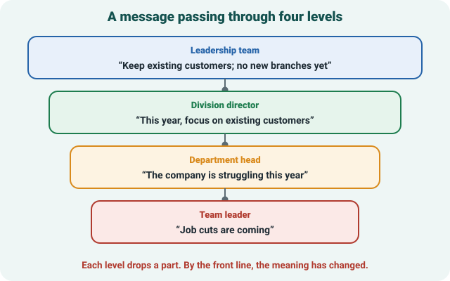

K2 · Speaking and writing clearly › Level 5 Leading
Communicate direction across many layers of management
This lesson completes Sheet 4: Direction note and communication plan. Print template. Checking understanding by asking people to restate was covered in Make team goals clear (N5).
1. Objectives
- Write a 5-part one-page direction note that states clearly what is not yet known.
- Plan communication in order of level, and check the message at the front line after 2 weeks.
2. Retrieval warm-up
- What are the 4 parts of the strategy-to-work table?
- What three decisions can a monthly review make for each priority?
Answers
- Priority; each division's part; dependencies; criteria.
- Continue, change approach, stop.
Review: Strategy into execution.
3. Explanation
At executive level, few people hear you directly. Your message passes through division directors, department heads, team leaders. Each time it is passed on, it gets shorter or changes meaning.

A one-page direction note has 5 parts.
- Why now: what has changed.
- Where we are going: results in the next 12–18 months.
- What we will not do: what the organisation will stop or not start yet.
- What changes for each group: what each group of people will see differently.
- What we do not know yet: and when we will know.
Part 5 is often left out. But when leaders are silent, people guess, and they usually guess worse than reality. Being honest about what you do not know keeps trust.
Communicate in order.
Order of communication
- Middle managers first1–2 days ahead. With the direction note and FAQs.
- The whole organisationLeaders speak directly, same content everywhere.
- Managers brief their teamsUsing the same one-page note, plus their team's part.
- RepeatBring it up again in the following months' meetings.
Middle managers must know before their staff. If staff ask and their manager does not know, trust in both levels falls.
Check at the front line. After 2 weeks, meet a few people at the lowest level. Ask: "What is the company prioritising this year? How does your work connect to it?" Compare their answers with the original. The gaps show which level needs to say it again.
4. Workplace example
Hypothetical scenario. A small bank decides to stop opening new branches this year and put its effort into the mobile app. The CEO, Laura, needs to tell 2,000 staff.
Last time, she only sent an email. Three weeks later, branches were full of rumours about closures and job cuts.
This time she writes Sheet 4. Why now: customers using the app are growing fast. Where we are going: 70% of transactions through the app within 18 months. What we will not do: no new branches yet; no existing branch closes this year. What changes: tellers are trained to help customers use the app. What we do not know: next year's branch numbers, to be announced in June.
She meets the regional directors 2 days ahead. Then she speaks directly in an online meeting for the whole bank.
Two weeks later, she meets tellers in 3 branches. Two branches have it right. One still fears job cuts. She asks that region's director to repeat the "no branch closes" part.
Why this works: she states what will not happen and what is not yet known. Middle managers know first. She checks at the front line for real.
5. Practice
Hypothetical scenario. You are director of a seafood processing plant. Next year, the plant will bring packing robots onto 2 lines.
Write the 5-part direction note. Note the order of communication and 2 questions to check at the front line.
Hint 1
What will workers worry about most? The "What changes" and "What we do not know" parts need to answer that worry directly.
Hint 2
If you do not yet know what happens to packing jobs, say clearly that you do not know, and when you will.
Model answer
- Why now: customers want faster packing.
- Where we are going: 2 automated lines by September next year.
- What we will not do: no automation of the preparation stage yet.
- What changes: the packing team learns to operate and check the robots; maintenance learns to service them.
- What we do not know: how many people each new line needs. We will say after 3 months of trial running.
- Order: supervisors and team leaders 2 days ahead; whole-plant meetings by shift; team leaders brief their teams.
- Two questions: "What will change at the plant next year?" and "What will your team do differently?"
(The details are hypothetical.)
6. Self-check
Choose an answer. Every option has an explanation.
Question 1. The leadership team has not decided whether to close the old workshop. What should the direction note say?
-
Not quite. Silence makes people guess, usually worse than reality. Rumours spread faster than announcements.
-
Correct. Correct. Being honest about unknowns, with a date, keeps trust.
-
Not quite. Promising something undecided is a big risk. If you change course later, trust is gone.
Question 2. You plan to announce a new structure at an all-company meeting tomorrow morning. Middle managers know nothing yet. What should you do?
-
Not quite. Staff will ask their managers straight after. Managers who cannot answer lose credibility.
-
Correct. Correct. Managers who know first can brief their teams accurately.
-
Not quite. Each manager will say it differently. The message distorts, especially without leaders' own words.
Question 3. Two weeks after the announcement, what is the best way to check whether the message reached the front line correctly?
-
Not quite. News through middle layers is already filtered. They may not see where they said it differently.
-
Correct. Correct. Hearing it directly shows where the message drifted and which level must say it again.
-
Not quite. Opening an email does not mean understanding it correctly.
Question 4. Which part of the direction note helps divisions know where to focus their effort?
-
Correct. Correct. Saying what stops or will not start keeps divisions from spreading effort everywhere.
-
Not quite. This explains the reason. It does not show what to cut.
-
Not quite. This keeps trust, but it does not help choose priorities.
7. Reflection
- How did the front line understand your last important message? Did you check?
- What unknown are you hesitant to say out loud?
8. Real-world application
In the next 7 days, choose a message about to go out across several levels. Write Sheet 4. Book a meeting with the front line in 2 weeks to check it.
Level of evidence. This lesson draws on the capability descriptions "Communicates with influence" (APS) and "Communicating and Influencing" (UK Success Profiles). The five parts and the order of communication are this site's proposed method.
9. Metadata
| skill | K2 · Speaking and writing clearly |
|---|---|
| level | Level 5 · Leading |
| group | N6 |
| framework_map | APS Integrated Leadership System: Communicates with influence; UK Civil Service Success Profiles: Communicating and Influencing; WEF: Leadership and social influence; SkillsFuture CCS: Communication; NACE: Communication (reference only) |
| original | Vietnamese version |
| updated | 2026-11-14 |
Finish the lesson
Mark it as done and the site suggests reviews after 1, 3 and 7 days. The data stays on your device only.
Suggested reviews: